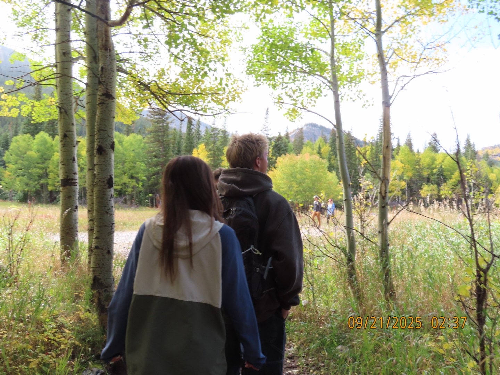

Snowboarding
As a Colorado native, snowboarding has always been a passion for me. I have been snowboarding since I was young and plan on doing it for as long as I can. Eventually I'd like to learn how to ski as well.
Horse Riding
I ride at Cloudview stables in Broomfield, Colorado. I've competed in hunter/jumper which are both English disiplines (not western!)

Art
Art provides me with a creative outlet, I'm constantly searching for my next project. Being creative is one of my biggest motivations, it's how I make money, have fun, and express myself!
Boating
Boating and wake surfing is a recent hobby that I picked up in the summer of 2024. I have always been interested in boating I'm very grateful to become involved in the boating community.
Exploring
Exploring the mountains of Colorado is one of my favorite things to do. I love mountain sports, hiking, and camping. I plan on going on roadtrips to visit national parks across the states as well as traveling out of the country.
